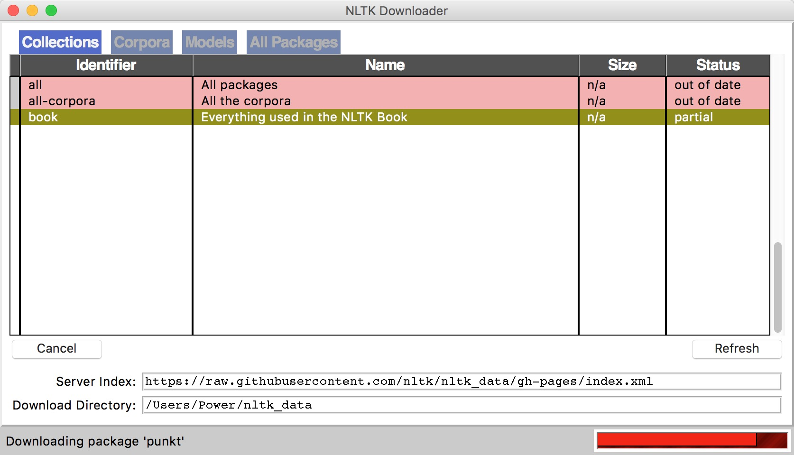
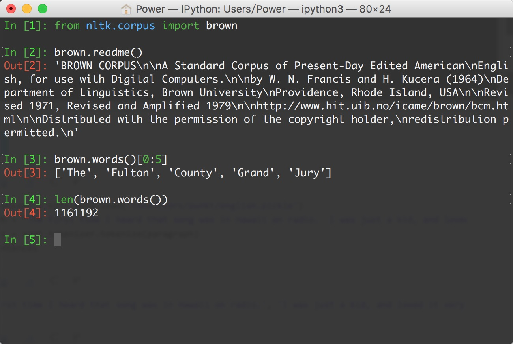

NLTK (Natural Language Toolkit)
NTLK是著名的Python自然语言处理工具包，但是主要针对的是英文处理。NLTK配套有文档，有语料库，有书籍。
- NLP领域中最常用的一个Python库
- 开源项目
- 自带分类、分词等功能
- 强大的社区支持
- 语料库，语言的实际使用中真是出现过的语言材料
- http://www.nltk.org/py-modindex.html
在NLTK的主页详细介绍了如何在Mac、Linux和Windows下安装NLTK：http://nltk.org/install.html ，建议直接下载Anaconda，省去了大部分包的安装，安装NLTK完毕，可以import nltk测试一下，如果没有问题，还有下载NLTK官方提供的相关语料。
安装步骤：
下载NLTK包
pip install nltk运行Python，并输入下面的指令
import nltk nltk.download()弹出下面的窗口，建议安装所有的包 ，即
all
测试使用：

语料库
nltk.corpus
import nltk
from nltk.corpus import brown # 需要下载brown语料库
# 引用布朗大学的语料库
# 查看语料库包含的类别
print(brown.categories())
# 查看brown语料库
print('共有{}个句子'.format(len(brown.sents())))
print('共有{}个单词'.format(len(brown.words())))
执行结果：
['adventure', 'belles_lettres', 'editorial', 'fiction', 'government', 'hobbies', 'humor', 'learned', 'lore', 'mystery', 'news', 'religion', 'reviews', 'romance', 'science_fiction']
共有57340个句子
共有1161192个单词
分词 (tokenize)
- 将句子拆分成具有语言语义学上意义的词
- 中、英文分词区别：
- 英文中，单词之间是以空格作为自然分界符的
- 中文中没有一个形式上的分界符，分词比英文复杂的多
- 中文分词工具，如：结巴分词
pip install jieba - 得到分词结果后，中英文的后续处理没有太大区别
# 导入jieba分词
import jieba
seg_list = jieba.cut("欢迎来到黑马程序员Python学科", cut_all=True)
print("全模式: " + "/ ".join(seg_list)) # 全模式
seg_list = jieba.cut("欢迎来到黑马程序员Python学科", cut_all=False)
print("精确模式: " + "/ ".join(seg_list)) # 精确模式
运行结果：
全模式: 欢迎/ 迎来/ 来到/ 黑马/ 程序/ 程序员/ Python/ 学科
精确模式: 欢迎/ 来到/ 黑马/ 程序员/ Python/ 学科
词形问题
- look, looked, looking
- 影响语料学习的准确度
- 词形归一化
1. 词干提取(stemming)
示例：
# PorterStemmer
from nltk.stem.porter import PorterStemmer
porter_stemmer = PorterStemmer()
print(porter_stemmer.stem('looked'))
print(porter_stemmer.stem('looking'))
# 运行结果：
# look
# look
示例：
# SnowballStemmer
from nltk.stem import SnowballStemmer
snowball_stemmer = SnowballStemmer('english')
print(snowball_stemmer.stem('looked'))
print(snowball_stemmer.stem('looking'))
# 运行结果：
# look
# look
示例：
# LancasterStemmer
from nltk.stem.lancaster import LancasterStemmer
lancaster_stemmer = LancasterStemmer()
print(lancaster_stemmer.stem('looked'))
print(lancaster_stemmer.stem('looking'))
# 运行结果：
# look
# look
2. 词形归并(lemmatization)
stemming，词干提取，如将ing, ed去掉，只保留单词主干
lemmatization，词形归并，将单词的各种词形归并成一种形式，如am, is, are -> be, went->go
NLTK中的stemmer
PorterStemmer, SnowballStemmer, LancasterStemmer
NLTK中的lemma
WordNetLemmatizer
问题
went 动词 -> go， 走 Went 名词 -> Went，文特
指明词性可以更准确地进行lemma
示例：
from nltk.stem import WordNetLemmatizer
# 需要下载wordnet语料库
wordnet_lematizer = WordNetLemmatizer()
print(wordnet_lematizer.lemmatize('cats'))
print(wordnet_lematizer.lemmatize('boxes'))
print(wordnet_lematizer.lemmatize('are'))
print(wordnet_lematizer.lemmatize('went'))
# 运行结果：
# cat
# box
# are
# went
示例：
# 指明词性可以更准确地进行lemma
# lemmatize 默认为名词
print(wordnet_lematizer.lemmatize('are', pos='v'))
print(wordnet_lematizer.lemmatize('went', pos='v'))
# 运行结果：
# be
# go
3. 词性标注 (Part-Of-Speech)
NLTK中的词性标注
nltk.word_tokenize()
示例：
import nltk
words = nltk.word_tokenize('Python is a widely used programming language.')
print(nltk.pos_tag(words)) # 需要下载 averaged_perceptron_tagger
# 运行结果：
# [('Python', 'NNP'), ('is', 'VBZ'), ('a', 'DT'), ('widely', 'RB'), ('used', 'VBN'), ('programming', 'NN'), ('language', 'NN'), ('.', '.')]
4. 去除停用词
- 为节省存储空间和提高搜索效率，NLP中会自动过滤掉某些字或词
- 停用词都是人工输入、非自动化生成的，形成停用词表
分类
语言中的功能词，如the, is…
词汇词，通常是使用广泛的词，如want
中文停用词表
中文停用词库
哈工大停用词表
四川大学机器智能实验室停用词库
百度停用词列表
其他语言停用词表
使用NLTK去除停用词
stopwords.words()
示例：
from nltk.corpus import stopwords # 需要下载stopwords
filtered_words = [word for word in words if word not in stopwords.words('english')]
print('原始词：', words)
print('去除停用词后：', filtered_words)
# 运行结果：
# 原始词： ['Python', 'is', 'a', 'widely', 'used', 'programming', 'language', '.']
# 去除停用词后： ['Python', 'widely', 'used', 'programming', 'language', '.']
5. 典型的文本预处理流程
示例：
import nltk
from nltk.stem import WordNetLemmatizer
from nltk.corpus import stopwords
# 原始文本
raw_text = 'Life is like a box of chocolates. You never know what you\'re gonna get.'
# 分词
raw_words = nltk.word_tokenize(raw_text)
# 词形归一化
wordnet_lematizer = WordNetLemmatizer()
words = [wordnet_lematizer.lemmatize(raw_word) for raw_word in raw_words]
# 去除停用词
filtered_words = [word for word in words if word not in stopwords.words('english')]
print('原始文本：', raw_text)
print('预处理结果：', filtered_words)
运行结果：
原始文本： Life is like a box of chocolates. You never know what you're gonna get.
预处理结果： ['Life', 'like', 'box', 'chocolate', '.', 'You', 'never', 'know', "'re", 'gon', 'na', 'get', '.']
使用案例：
import nltk
from nltk.tokenize import WordPunctTokenizer
sent_tokenizer = nltk.data.load('tokenizers/punkt/english.pickle')
paragraph = "The first time I heard that song was in Hawaii on radio. I was just a kid, and loved it very much! What a fantastic song!"
# 分句
sentences = sent_tokenizer.tokenize(paragraph)
print(sentences)
sentence = "Are you old enough to remember Michael Jackson attending. the Grammys with Brooke Shields and Webster sat on his lap during the show?"
# 分词
words = WordPunctTokenizer().tokenize(sentence.lower())
print(words)
输出结果：
['The first time I heard that song was in Hawaii on radio.', 'I was just a kid, and loved it very much!', 'What a fantastic song!']
['are', 'you', 'old', 'enough', 'to', 'remember', 'michael', 'jackson', 'attending', '.', 'the', 'grammys', 'with', 'brooke', 'shields', 'and', 'webster', 'sat', 'on', 'his', 'lap', 'during', 'the', 'show', '?']